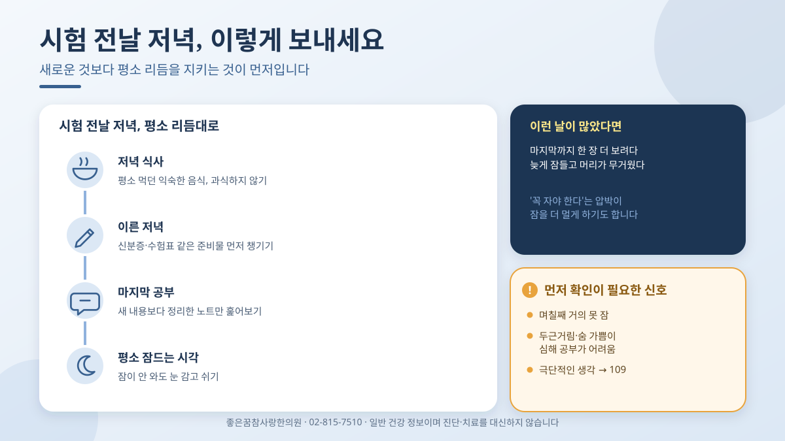

이종호 한의사 감수좋은꿈참사랑한의원 대표원장 (한의사 면허번호 19769)발행 2026-11-24 · 수정 2026-11-25
이 글의 차례
시험 전날 저녁 9시. 책상 위에는 아직 다 못 본 문제집이 쌓여 있습니다. 한 장이라도 더 보면 한 문제라도 더 맞힐 것 같아 책을 덮지 못합니다. 자정이 넘어서야 불을 끄지만, 누우니 외운 것들이 머릿속에서 저절로 재생됩니다. 내일 아침 늦잠을 자면 어쩌나, 시험장 가는 길이 막히면 어쩌나. 몇 번이고 시계를 봅니다. 새벽 2시, 그리고 3시.
결국 잠을 설친 채 아침을 맞습니다.
진료실에서 이런 말씀을 자주 듣습니다. 마지막까지 한 장이라도 더 보려다 늦게 잠들었고, 다음 날 머리가 무거웠다고요. 몇 달, 길게는 몇 년을 준비해 온 시험입니다. 마지막 날 한 장이라도 더 보고 싶은 마음은 너무나 당연합니다. 그 긴 시간을 지나오며 얼마나 애쓰셨을까 싶습니다.
그래서 저는 시험 전날에는 새로운 것을 더하기보다 평소 리듬을 지키는 쪽을 권합니다. 익숙한 저녁을 먹고, 준비물은 일찍 챙기고, 정리 노트만 훑어보고, 평소 시각에 눕는 것. 시험 전날의 컨디션은 이 평범한 순서를 얼마나 지키느냐에 달린 경우가 많습니다.
다만 며칠째 거의 못 자거나 불안이 너무 커 극단적인 생각이 든다면, 혼자 견디지 말고 도움을 요청하세요.
시험 전날 밤, 잠이 멀어지는 이유
시험을 앞두면 몸은 긴장한 채로 깨어 있습니다. 심장이 조금 빨리 뛰고, 손에 땀이 나고, 머리는 쉬지 않고 돌아갑니다. 평소보다 잠들기 어려운 것이 오히려 자연스러운 반응입니다.
여기에 전날 늦게까지 새 내용을 보면 머리가 계속 돌아가 누워도 생각이 멈추지 않습니다. 처음 보는 문제를 틀리기라도 하면 불안까지 커지지요. 평소와 다른 음식이나 과식은 속을 불편하게 해 잠을 방해하기도 합니다. 기운 내라고 챙겨 먹은 보양식이 오히려 속을 무겁게 하는 경우도 있습니다.
뜻밖의 이유도 있습니다. 내일 일찍 일어나야 하니 평소보다 두세 시간 일찍 눕는 경우입니다. 아직 졸리지 않은 시각이라 뒤척이는 시간만 길어지고, 그만큼 초조해집니다. 오후 늦게 마신 커피나 에너지 음료가 밤까지 남아 잠을 밀어내기도 합니다.
수험 커뮤니티에서 다른 사람의 마지막 정리나 예상 문제를 들여다보다가, 나만 덜 한 것 같은 불안이 커지는 분도 많습니다.
그리고 무엇보다, 꼭 자야 한다는 압박이 잠을 더 멀게 만드는 경우가 많습니다. 하룻밤 잠이 부족한 것보다, 잠을 못 자면 시험을 망친다는 생각이 더 큰 짐이 되는 셈입니다.

이런 분들을 자주 뵙습니다
이런 분들이 많습니다. 노량진에서 공무원 시험을 준비하며 평소 새벽 1시에 자고 아침 8시에 일어나다가, 시험 당일에는 6시에 일어나야 하는 분입니다. 전날 하루만 일찍 누우면 잠들기 어렵기 쉽습니다. 이런 분께는 1~2주 전부터 일어나는 시각을 며칠에 30분씩 당겨, 시험 당일 시각에 맞춰 두자고 말씀드립니다.
일어나는 시각이 당겨지면 잠드는 시각도 따라 당겨지는 경우가 많습니다.
시험장이 멀어 전날 가족 집이나 숙소에서 자야 하는 분들도 있습니다. 낯선 잠자리는 그 자체로 잠을 얕게 합니다. 평소 쓰던 베개 커버나 귀마개, 안대를 챙기고, 저녁은 익숙한 메뉴로 고르시라고 권합니다.
긴장하면 배가 자주 아픈 분들도 자주 뵙습니다. 시험 날 아침이면 화장실을 몇 번씩 들락거리지요. 이런 분께는 전날 저녁을 기름지고 매운 음식 대신 평소 먹던 밥과 국 정도로 가볍게 드시고, 다음 날 아침에는 화장실 갈 시간을 넉넉히 두라고 말씀드립니다.
지난 시험 전날 한숨도 못 잔 기억 때문에 벌써부터 걱정인 분들도 있습니다. 이런 분께는 잠을 목표로 삼지 말고 눈을 감고 쉬는 것을 목표로 삼자고 합니다. 목표가 바뀌면 누워 있는 시간이 한결 덜 괴롭습니다.
직장을 다니며 시험을 준비하는 분들도 계십니다. 전날까지 야근을 하고 바로 시험장에 가야 하는 경우가 많지요. 이런 분께는 전날만큼은 퇴근 뒤 저녁을 일찍 먹고, 업무 메신저 알림을 꺼 두고, 일 생각은 종이에 적어 책상 위에 내려놓고 오시라고 말씀드립니다. 머리가 일과 시험 사이를 오가지 않게 경계를 그어 두는 것입니다.
시험 전날 저녁, 시간 순서대로
준비는 시험 1~2주 전부터 시작합니다. 시험 당일 일어날 시각에 맞춰 매일 같은 시각에 일어나고, 아침 햇빛을 봅니다. 주말에도 마찬가지입니다.
전날 오후에는 커피와 에너지 음료를 오후 2시 전에 마칩니다. 공부는 새 문제집 대신 오답 노트와 정리 노트로 바꿉니다. 마지막 공부는 새 내용보다 정리한 노트를 훑어보는 정도면 충분합니다.
저녁은 잠들기 3시간 전쯤, 평소 먹던 익숙한 음식으로 과식하지 않게 드세요. 식사 뒤에는 신분증과 수험표 같은 준비물을 저녁 일찍 챙겨 둡니다. 시계나 필기구처럼 시험장에 가져갈 수 있는 물건은 시험마다 규정이 달라, 응시하는 시험 공고에서 미리 확인해 두시면 좋습니다. 다음 날 입을 옷과 시험장 가는 길, 걸리는 시간도 한 번 살펴봅니다.
알람은 두 개를 맞춰 두면 늦잠 걱정을 덜 수 있습니다.
준비를 마쳤다면 20분 정도 동네를 천천히 걸어 보세요. 숨이 찰 만큼이 아니라 이야기를 나눌 수 있을 만큼의 속도면 됩니다. 하루 종일 앉아 굳은 몸이 조금 풀리고, 머리도 책에서 한 발짝 떨어질 수 있습니다.
잠들기 1~2시간 전에는 따뜻한 물로 샤워하거나 발을 담그고, 휴대폰은 알람만 남기고 내려놓습니다. 단체 대화방이나 수험 커뮤니티의 예상 문제 이야기는 저녁부터 보지 않는 편이 마음이 덜 흔들립니다. 긴장을 풀려고 마시는 술 한 잔은 잠드는 것을 돕는 것처럼 느껴져도 새벽잠을 얕게 만들 수 있어, 전날은 피하시기를 권합니다.
평소 잠드는 시각이 되면 불을 끄고 눕습니다. 잠이 안 와도 눈을 감고 쉬세요. 들이쉴 때보다 내쉴 때를 조금 길게 하면서, 몸이 이불에 닿는 느낌에 마음을 둡니다. 너무 오래 뒤척인다 싶으면 잠깐 일어나 어두운 조명 아래에서 정리 노트를 몇 장 넘기다가 졸릴 때 다시 누우세요.
혹시 지금 이런 모습이 있으신가요? 시험 당일 일어날 시각과 지금 일어나는 시각이 두 시간 넘게 차이 난다. 시험 전날 새 문제집이나 처음 보는 자료를 펴는 편이다. 오후 늦게 커피나 에너지 음료를 자주 마신다. 긴장하면 속이 불편하거나 배가 아프다. 준비물과 시험장 가는 길을 당일 아침에 챙긴다.
해당하는 것이 많다면 시험 1~2주 전부터 하나씩 미리 바꿔 두세요. 전날 하루에 다 바꾸려 하면 그것이 또 하나의 긴장이 됩니다.

잠이 오지 않는 밤, 스스로에게 해 줄 말
불을 끄고 누웠는데 잠이 오지 않으면 머릿속에서 계산이 시작됩니다. 지금 자면 다섯 시간, 이제 네 시간 반. 그 계산이 초조함을 키우고, 초조함이 잠을 더 멀리 보냅니다. 그래서 저는 시험 전날 밤에는 시계를 머리맡에서 치워 두시라고 권합니다. 휴대폰 알람은 맞춰 두되, 화면이 보이지 않게 뒤집어 두세요.
그리고 스스로에게 이렇게 말해 주셨으면 합니다. 오늘 밤은 잘 자려고 애쓰지 않아도 된다. 눈을 감고 누워 쉬는 것으로 충분하다. 나는 그동안 할 만큼 했다. 생각이 자꾸 시험 문제로 돌아가면 억지로 밀어내지 말고, 또 생각했구나 하고 숨으로 돌아오면 됩니다. 몇 번이고 돌아와도 괜찮습니다.
긴장이 몸에 쌓여 있다면 누운 채로 몸을 한 군데씩 풀어 보세요. 어깨를 귀 쪽으로 끌어올렸다가 툭 내리고, 주먹을 꽉 쥐었다가 천천히 폅니다. 발끝을 몸 쪽으로 당겼다가 놓습니다. 힘을 준 뒤 풀어 보면 어디가 굳어 있었는지 비로소 알게 됩니다. 종아리에 쥐가 잘 나는 분은 발끝 당기기를 살살 하시거나 건너뛰세요.
시험 당일 아침까지 이어서
전날 밤을 어떻게 보냈든 아침은 평소처럼 시작합니다. 정한 시각에 일어나 커튼을 열고 빛을 봅니다. 아침은 평소 먹던 것을 평소만큼 드세요. 커피를 마시던 분이라면 평소 양 정도로만 마십니다. 시험이라고 평소보다 진하게, 많이 마시면 손이 떨리거나 화장실이 급해질 수 있습니다.
시험이 오후에 잡혀 있다면 늦잠으로 보충하기보다 평소 시각에 일어나 오전에 몸과 머리를 깨워 두고, 점심은 시험 두세 시간 전에 가볍게 드세요. 점심을 많이 먹으면 시험 중에 졸음이 밀려오기 쉽습니다.
시험장에는 여유 있게 도착해 자리와 화장실 위치를 먼저 확인합니다. 시험장이 춥거나 더울 수 있으니 입고 벗기 쉬운 겉옷을 챙기면 좋습니다. 쉬는 시간에는 지난 과목의 답을 맞춰 보기보다 물 한 모금 마시고 어깨를 한 번 풀어 주세요. 끝난 과목은 이미 끝난 일이고, 지금 할 일은 다음 과목입니다.

얼마나 지켜보고, 언제 진료를 받을까요
시험 전날 하루 잠을 설치는 것은 많은 수험생이 겪는 일입니다. 하룻밤 설쳤다고 그동안 준비한 것이 사라지지는 않으니, 그 하루만으로 크게 걱정하지 않으셔도 됩니다.
다만 시험 2~4주 전부터 잠드는 데 30분 넘게 걸리는 밤이 일주일에 세 번 넘게 이어지거나, 모의고사 때마다 긴장으로 속이 불편한 일이 되풀이된다면 시험 몇 주 전에 미리 상담을 받아 보시길 권합니다. 시험이 코앞일 때보다 여유가 있을 때 리듬을 맞춰 볼 시간이 생깁니다.
다음과 같은 경우에는 기다리지 말고 먼저 해당 진료를 받으세요.
- 며칠째 거의 잠을 못 자는 경우
- 가슴 두근거림과 숨 가쁨이 심해 공부하기 어려운 경우
- 가슴이 조이듯 아프거나 숨쉬기 어려운 증상이 갑자기 생긴 경우
- 불안이 너무 커서 극단적인 생각이 드는 경우(109)
가슴 통증이나 숨쉬기 어려운 증상이 갑자기 생기면 긴장 탓으로 넘기지 말고 가까운 응급실에서 바로 확인을 받으세요. 복용 중인 수면제나 신경안정제는 처방한 의사와 상의 없이 줄이거나 끊지 않습니다. 잠을 거의 못 자는 날이 이어지며 기분이 깊이 가라앉거나 극단적인 생각이 든다면 혼자 견디지 말고 109에 바로 도움을 요청하세요.
좋은꿈참사랑한의원에 처음 오시면
처음 오시면 저는 시험 날짜부터 여쭙니다. 남은 기간이 얼마인지에 따라 함께 정할 수 있는 것이 달라지기 때문입니다. 지금 일어나는 시각과 잠드는 시각, 끼니와 카페인, 긴장할 때 몸에 나타나는 변화도 듣습니다. 두근거림인지, 손땀인지, 속이 불편한 쪽인지. 잠들기 어려운지, 자주 깨는지, 새벽에 깨는지 잠의 모양도 나눠 봅니다.
그다음 양손을 올려 봐 달라고 하고 맥을 짚습니다. 필요하다고 판단되면 혀를 보거나 배를 살펴 긴장과 소화 상태를 함께 확인합니다. 그렇게 들은 이야기를 모아 침이나 한약 상담 등 지금 상태에 맞는 방법을 정하고, 진료실을 나서기 전에는 시험 날짜에 맞춘 기상 시각과 마지막 카페인 시각을 함께 정합니다.
한약을 생각하신다면 시험 직전에 처음 시작하기보다, 몸에 맞는지 살필 여유를 두고 미리 상의해 주세요.
다시 오시면 그사이 모의고사와 공부 일정을 어떻게 지나왔는지 지난 이야기를 이어서 여쭙습니다. 시험이 끝난 뒤에도 흐트러진 잠의 리듬이 한동안 남는 분이 있어, 시험 뒤의 생활도 함께 이야기합니다.
오실 때 지난 시험 전날 잠든 시각과 다음 날 컨디션, 시험 전날 속이 불편했던 경험과 그날 먹은 음식, 긴장할 때 몸에 나타나는 변화, 복용 중인 약과 다가오는 시험 일정을 적어 오시면 이야기가 빨라집니다.

마치며
시험 전날 밤은 누구에게나 깁니다. 잠이 오지 않는 것도, 마지막까지 책을 붙들고 싶은 것도 그만큼 간절하다는 뜻이겠지요. 그 마음을 탓하실 필요는 없습니다.
다만 한 가지는 기억해 주셨으면 합니다. 내일의 컨디션은 오늘 밤 하루가 아니라 그동안 쌓아 온 날들이 함께 받쳐 줍니다. 오늘은 평소처럼 먹고, 평소처럼 눕는 것으로 충분합니다. 시험을 마치고 저를 만나시면, 그 전날 밤을 어떻게 보내셨는지부터 여쭙겠습니다.
함께 읽으면 좋은 글
- 시험 당일 아침 식사와 카페인은 어떻게 계획하면 되나요?
- 시험 4주 전에는 잠과 식사 리듬을 어떻게 점검하면 되나요?
- 시험을 앞두고 미리 불안해질 때는 어떤 루틴이 도움이 되나요?

시험 전날 밤, 잠이 멀어지는 이유
- 시험을 앞두면 몸은 긴장한 채로 깨어 있습니다.
- 심장이 조금 빨리 뛰고, 손에 땀이 나고, 머리는 쉬지 않고 돌아갑니다.
이런 분들을 자주 뵙습니다
- 이런 분들이 많습니다.
- 노량진에서 공무원 시험을 준비하며 평소 새벽 1시에 자고 아침 8시에 일어나다가,…
시험 전날 저녁, 시간 순서대로
- 준비는 시험 1~2주 전부터 시작합니다.
- 시험 당일 일어날 시각에 맞춰 매일 같은 시각에 일어나고, 아침 햇빛을 봅니다.
잠이 오지 않는 밤, 스스로에게 해 줄 말
- 불을 끄고 누웠는데 잠이 오지 않으면 머릿속에서 계산이 시작됩니다.
- 지금 자면 다섯 시간, 이제 네 시간 반.
자주 묻는 질문
시험 전날 잠을 못 자면 시험을 망치나요?
하루 잠이 부족해도 눈을 감고 누워 있는 것만으로 몸은 어느 정도 쉬므로, 잠에 너무 매달리지 않는 것이 좋습니다.
시험 전날 처음 먹어 보는 음식은 피해야 하나요?
익숙하지 않은 음식은 속이 불편할 수 있어 평소 먹던 음식을 권합니다.
시험 전날 잠이 안 오면 수면제를 먹어도 될까요?
처방받지 않은 약을 시험 전날 처음 드시는 것은 권하지 않습니다. 이미 처방받아 드시는 약이 있다면 처방한 의사와 상의해 주세요.
시험 전날 공부는 몇 시까지 하는 것이 좋을까요?
평소 잠드는 시각 1시간 전쯤에는 책을 덮고 준비물을 챙긴 뒤 씻고 쉬는 순서를 권합니다. 마지막에는 새 내용보다 익숙한 정리 노트를 보는 편이 마음을 가라앉히기 쉽습니다.
진료 시간은 어떻게 되나요?
좋은꿈참사랑한의원은 평일 09:30~20:00(점심 13:00~14:00), 토·일·공휴일 09:30~15:00에 진료합니다.
좋은꿈참사랑한의원은 재진 때 지난번 이야기부터 이어서 여쭙니다. 진료시간과 예약은 오시는 길에서 확인하세요.
어디서 상담받을 수 있나요?
좋은꿈참사랑한의원은 서울 동작구 만양로2길 2 신성빌딩 3층·5층(서울 동작구 상도동, 7호선 상도역 3번 출구 근처)에 있습니다. 한의사 3명(이종호 대표원장, 조영기 수석진료원장, 정원영 진료원장)이 진료합니다. 진료시간은 평일 09:30~20:00(점심 13:00~14:00), 토·일·공휴일 09:30~15:00이며, 방문 전 전화로 확인을 권합니다. 예약은 네이버 예약, 카카오톡 상담, 전화 02-815-7510로 받습니다.
이 글은 일반적인 건강 정보이며 개인의 진단이나 치료를 대신하지 않습니다. 증상이 있거나 복용 중인 약이 있다면 진료를 통해 확인하세요. 치료 효과는 개인마다 다를 수 있습니다.
작성 기준: 일반적으로 알려져 있는 건강 정보를 참고해 정리했습니다(대표원장 감수). 증상 기록은 1~2주 동안 하루 1회, 비슷한 시간에 적어 오시면 지난 상태와 비교하기 쉽습니다.